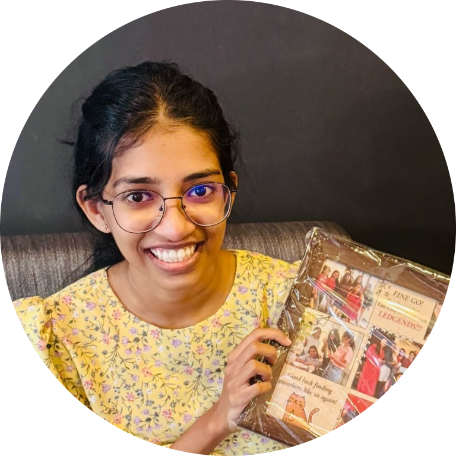

01 / DEGREE
BSc (Hons) in Information Systems
Sabaragamuwa University of Sri Lanka · 2024–Present
Undergraduate studies in Information Systems at Sabaragamuwa University of Sri Lanka.
UI/UX design · Information systems · Web & mobile
Information Systems undergraduate · UI/UX Design Intern
I’m an Information Systems undergraduate focused on user-centered digital experiences. I design interfaces for web and mobile applications, with experience across authentication flows, HR systems, dashboards, and emergency response tools. I bring a background in graphic design and collaborative HR operations.

Designing for people01 — Education
Building a foundation across information systems, design, and technology.
Sabaragamuwa University of Sri Lanka · 2024–Present
Undergraduate studies in Information Systems at Sabaragamuwa University of Sri Lanka.
Boswell College International · Kaluthara
Physical Science stream.
02 — Capabilities
User-centered design and frontend skills for thoughtful web and mobile experiences.
03 — Experience
HR and administration experience alongside my information systems studies.
Managed recruitment, CV screening, interview coordination, and candidate communication. Verified documents, maintained recruitment records, and supported daily HR and administrative operations.
Assisted with CV screening, candidate shortlisting, interview scheduling, recruitment documentation, and general HR activities.
04 — Community & creativity
Active in university communities through coordination, graphic design, volunteering, and public relations.
Active member and batch coordinator at the Rotaract Club of Sabaragamuwa University of Sri Lanka.
Administrative and graphic design work, including the SDG Series.
Public relations for the Together Sri Lanka 2026/27 Cluster Project.
Contributed as an active member and volunteer, with graphic design work for the IEEE Student Branch.
05 — Projects
Selected web, mobile, and product design work — including one new project from my CV.
Individual project · Ongoing
AI-powered B2B garment production platform. Connects dressmakers with clothing businesses for sourcing, orders, and marketing. Contributed to interface and dashboard work, integrated BI dashboards, and improved profile information visibility.
Group project · Ongoing
Human Resource Management System. Designed UI/UX for recruitment, employee management, attendance, leave, and role-based access. Focused on clear interfaces and dashboard experiences for workforce insights.
Group project · Ongoing · New
AI-powered gym management system. A full-stack platform for member, membership, and payment management, with an AI fitness chatbot, workout and diet recommendations, and QR-based equipment guidance.
Group project
Crowdsourced, location-aware emergency response system. Designed authentication screens for registration, login, and password reset; contributed to the Admin Verification Dashboard and responder interface for citizens, responders, and administrators.
Group project
A web and mobile elderly-care platform for connecting senior citizens with caregivers, arranging medical appointments, tracking health indicators, and sending emergency alerts to family.
Web design
An interactive documentary catalog with category browsing, search, ratings, reviews, and video previews in a responsive interface.
Branding
A responsive editorial portfolio designed to present my projects, design practice, skills, and experience.
06 — Get in touch
Open to UI/UX design opportunities and creative collaborations.